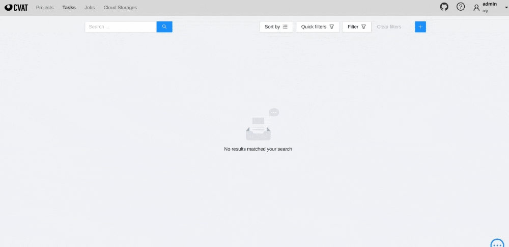

This the multi-page printable view of this section. Click here to print.
Advanced
- 1: CVAT deployment on Kubernetes with Helm
- 2: Semi-automatic and Automatic Annotation
- 3: Installation Analytics
- 4: Mounting cloud storage
- 5: LDAP Backed Authentication
- 6: Backup guide
- 7: Upgrade guide
- 8: IAM: system roles
- 9: Webhooks
1 - CVAT deployment on Kubernetes with Helm
- Prerequisites
- Configuration
- Deployment
- Post-deployment configuration
- FAQ
- What is kubernetes and how it is working?
- What is helm and how it is working?
- How to setup Minikube
- How to understand what diff will be inflicted by ‘helm upgrade’?
- I want to use my own postgresql/redis with your chart.
- I want to override some settings in values.yaml.
- Why you used external charts to provide redis and postgres?
Prerequisites
- Installed and configured kubernetes cluster. If you do not already have a cluster, you can create one by using Minikube. How to setup Minikube.
- Installed kubectl
- Installed Helm.
- Installed dependencies
Installing dependencies
To install and/or update run:
helm dependency update
Optional steps
-
Ingress configuration for the Traefik ingress controller is enabled by default.
Note for Minikube use:
- because the Traefik creates its main service with
Loadbalansertype, which involve the assignment of externalIP by Cloud, what never happens on Minikube, you need to explicitly set the externalIP address for the traefic service. Add the following tovalues.override.yamlfile:traefik: service: externalIPs: - "your minikube IP (can be obtained with `minikube ip` command)" - Also ensure that your CVAT ingress appears on your hosts file (/etc/hosts).
You can do this by running this command:
cvat.localis default domainname, you can override it viavalues.override.yaml.echo "$(minikube ip) cvat.local" | sudo tee -a /etc/hosts
- because the Traefik creates its main service with
Configuration
- Create
values.override.yamlfile insidehelm-chartdirectory. - Fill
values.override.yamlwith new parameters for chart. - Override postgresql password
Postgresql password?
Put below into your values.override.yaml
postgresql:
secret:
password: <insert_password>
postgres_password: <insert_postgres_password>
replication_password: <insert_replication_password>
Or create your own secret and use it with:
postgresql:
global:
postgresql:
existingSecret: <secret>
(Optional) Enable Auto annotation feature
Before starting, ensure that the following prerequisites are met:
- The Nuclio CLI (nuctl) is installed. To install the CLI, simply download the appropriate CLI version to your installation machine.
-
Set
nuclio.enabled: truein yourvalues.override.yaml -
Run
helm dependency updateinhelm-chartdirectory -
Because Nuclio functions are images that need to be pushed and pulled to/from the registry, you need to configure credentials to pull from your preferable registry with the following settings: Options:
-
values.override.yamlfile:registry: loginUrl: someurl credentials: username: someuser password: somepass -
Or you can create a secret with credentials as described in the guide and set
registry.secretName=your-registry-credentials-secret-namein thevalues.override.yamlfile. -
In the case of using Minikube, you can run a local unsecured registry with minikube add-ons:
minikube addons enable registry minikube addons enable registry-aliasesBefore Docker container images can be pushed to your newly created unsecure registry, you need to add its address (
$(minikube ip):5000) to the list of unsecure registries to instruct Docker to accept working against it: follow the instructions in the Docker documentation
You might also need to log into your registry account (docker login) on the installation machine before running the deployment command.
-
-
Create cvat project:
nuctl --namespace <your cvat namespace> create project cvat -
Finaly deploy the fuction, i.e.:
- using minikube registry:
nuctl deploy --project-name cvat --path serverless/tensorflow/faster_rcnn_inception_v2_coco/nuclio --registry $(minikube ip):5000 --run-registry registry.minikube - using Docker hub:
nuctl deploy --project-name cvat --path serverless/tensorflow/faster_rcnn_inception_v2_coco/nuclio --registry docker.io/your_username
- using minikube registry:
(Optional) Enable Analytics
-
Set
analytics.enabled: truein yourvalues.override.yaml -
Run
helm dependency updateinhelm-chartdirectory -
Since custom images are required here, you will need to create them yourself and push them to your preferred docker registry. You might also need to log into your registry account (docker login) on the installation machine before running the push command. How to set up local registry when using Minikube see previous section
-
Let’s build custom elasticsearch, logstash and kibana images with the following command
docker-compose -f docker-compose.yml -f components/analytics/docker-compose.analytics.yml build -
Tag images:
docker tag cvat_kibana:latest <your registry>/cvat_kibana:latest docker tag cvat_elasticsearch:latest <your registry>/cvat_elasticsearch:latest docker tag cvat_logstash:latest <your registry>/cvat_logstash:latest -
Push to registry
docker push <your registry>/cvat_kibana:latest docker push <your registry>/cvat_elasticsearch:latest docker push <your registry>/cvat_logstash:latest -
Add corresponding settings into
values.override.yaml, i.e. for minikube registry:logstash: image: "registry.minikube/cvat_logstash" imageTag: "latest" elasticsearch: image: "registry.minikube/cvat_elasticsearch" imageTag: "latest" kibana: image: "registry.minikube/cvat_kibana" imageTag: "latest" -
Deploy
helm upgrade <release_name> --namespace <desired namespace> --install ./helm-chart -f ./helm-chart/values.yaml -f values.override.yaml
-
Deployment
Make sure you are using correct kubernetes context. You can check it with kubectl config current-context.
Warning: The k8s service name of Open Policy Agent is fixed to opa by default. This is done to be compatible with CVAT 2.0 but limits this helm chart to a single release per namespace. The OPA url currently can´t be set as an environment variable. As soon as this is possible you can set cvat.opa.composeCompatibleServiceName to false in your value.override.yaml and configure the opa url as additional env.
Execute following command from repo root directory
With overrides:
helm upgrade -n <desired_namespace> <release_name> -i --create-namespace ./helm-chart -f ./helm-chart/values.yaml -f ./helm-chart/values.override.yaml
Without overrides:
helm upgrade -n <desired_namespace> <release_name> -i --create-namespace ./helm-chart -f ./helm-chart/values.yaml
Post-deployment configuration
- Create super user
How to create superuser?
HELM_RELEASE_NAMESPACE="<desired_namespace>" &&\
HELM_RELEASE_NAME="<release_name>" &&\
BACKEND_POD_NAME=$(kubectl get pod --namespace $HELM_RELEASE_NAMESPACE -l tier=backend,app.kubernetes.io/instance=$HELM_RELEASE_NAME -o jsonpath='{.items[0].metadata.name}') &&\
kubectl exec -it --namespace $HELM_RELEASE_NAMESPACE $BACKEND_POD_NAME -c cvat-backend-app-container -- python manage.py createsuperuser
FAQ
What is kubernetes and how it is working?
What is helm and how it is working?
See https://helm.sh/
How to setup Minikube
- Please follow the official Minikube installation guide
-
minikube start --addons registry,registry-aliases
How to understand what diff will be inflicted by ‘helm upgrade’?
You can use https://github.com/databus23/helm-diff#install for that
I want to use my own postgresql/redis with your chart.
Just set postgresql.enabled or redis.enabled to false, as described below.
Then - put your instance params to “external” field
I want to override some settings in values.yaml.
Just create file values.override.yaml and place your changes here, using same structure as in values.yaml.
Then reference it in helm update/install command using -f flag
Why you used external charts to provide redis and postgres?
Because they definitely know what they do better then we are, so we are getting more quality and less support
How to use custom domain name with k8s deployment:
The default value cvat.local may be overriden with --set ingress.hosts[0].host option like this:
helm upgrade -n default cvat -i --create-namespace helm-chart -f helm-chart/values.yaml -f helm-chart/values.override.yaml --set ingress.hosts[0].host=YOUR_FQDN
How to fix fail of helm upgrade due label field is immutable reason?
If an error message like this:
Error: UPGRADE FAILED:cannot patch "cvat-backend-server" with kind Deployment: Deployment.apps "cvat-backend-server" is invalid: spec.selector: Invalid value: v1.LabelSelector{MatchLabels:map[string]string{"app":"cvat-app", "app.kubernetes.io/instance":"cvat", "app.kubernetes.io/managed-by":"Helm", "app.kubernetes.io/name":"cvat", "app.kubernetes.io/version":"latest", "component":"server", "helm.sh/chart":"cvat", "tier":"backend"}, MatchExpressions:[]v1.LabelSelectorRequirement(nil)}: field is immutable
To fix that, delete CVAT Deployments before upgrading
kubectl delete deployments --namespace=foo -l app=cvat-app
How to use existing PersistentVolume to store CVAT data instead of default storage
It is assumed that you have created a PersistentVolumeClaim named my-claim-name
and a PersistentVolume that backing the claim.
Claims must exist in the same namespace as the Pod using the claim.
For details see.
Add these values in the values.override.yaml:
cvat:
backend:
permissionFix:
enabled: false
defaultStorage:
enabled: false
server:
additionalVolumes:
- name: cvat-backend-data
persistentVolumeClaim:
claimName: my-claim-name
worker:
default:
additionalVolumes:
- name: cvat-backend-data
persistentVolumeClaim:
claimName: my-claim-name
low:
additionalVolumes:
- name: cvat-backend-data
persistentVolumeClaim:
claimName: my-claim-name
utils:
additionalVolumes:
- name: cvat-backend-data
persistentVolumeClaim:
claimName: my-claim-name
2 - Semi-automatic and Automatic Annotation
⚠ WARNING: Do not use
docker-compose upIf you did, make sure all containers are stopped bydocker-compose down.
-
To bring up cvat with auto annotation tool, from cvat root directory, you need to run:
docker-compose -f docker-compose.yml -f components/serverless/docker-compose.serverless.yml up -dIf you did any changes to the docker-compose files, make sure to add
--buildat the end.To stop the containers, simply run:
docker-compose -f docker-compose.yml -f components/serverless/docker-compose.serverless.yml down -
You have to install
nuctlcommand line tool to build and deploy serverless functions. Download version 1.8.14. It is important that the version you download matches the version in docker-compose.serverless.yml. For example, using wget.wget https://github.com/nuclio/nuclio/releases/download/<version>/nuctl-<version>-linux-amd64After downloading the nuclio, give it a proper permission and do a softlink.
sudo chmod +x nuctl-<version>-linux-amd64 sudo ln -sf $(pwd)/nuctl-<version>-linux-amd64 /usr/local/bin/nuctl -
Create
cvatproject inside nuclio dashboard where you will deploy new serverless functions and deploy a couple of DL models. Commands below should be run only after CVAT has been installed usingdocker-composebecause it runs nuclio dashboard which manages all serverless functions.nuctl create project cvatnuctl deploy --project-name cvat \ --path serverless/openvino/dextr/nuclio \ --volume `pwd`/serverless/common:/opt/nuclio/common \ --platform localnuctl deploy --project-name cvat \ --path serverless/openvino/omz/public/yolo-v3-tf/nuclio \ --volume `pwd`/serverless/common:/opt/nuclio/common \ --platform localNote:
- See deploy_cpu.sh for more examples.
GPU Support
You will need to install Nvidia Container Toolkit. Also you will need to add
--resource-limit nvidia.com/gpu=1 --triggers '{"myHttpTrigger": {"maxWorkers": 1}}'to the nuclio deployment command. You can increase the maxWorker if you have enough GPU memory. As an example, below will run on the GPU:nuctl deploy --project-name cvat \ --path serverless/tensorflow/matterport/mask_rcnn/nuclio \ --platform local --base-image tensorflow/tensorflow:1.15.5-gpu-py3 \ --desc "GPU based implementation of Mask RCNN on Python 3, Keras, and TensorFlow." \ --image cvat/tf.matterport.mask_rcnn_gpu \ --triggers '{"myHttpTrigger": {"maxWorkers": 1}}' \ --resource-limit nvidia.com/gpu=1Note:
- The number of GPU deployed functions will be limited to your GPU memory.
- See deploy_gpu.sh script for more examples.
- For some models (namely SiamMask) you need an Nvidia driver version greater than or equal to 450.80.02.
Note for Windows users:
If you want to use nuclio under Windows CVAT installation you should install Nvidia drivers for WSL according to this instruction and follow the steps up to “2.3 Installing Nvidia drivers”. Important requirement: you should have the latest versions of Docker Desktop, Nvidia drivers for WSL, and the latest updates from the Windows Insider Preview Dev channel.
Troubleshooting Nuclio Functions:
-
You can open nuclio dashboard at localhost:8070. Make sure status of your functions are up and running without any error.
-
Test your deployed DL model as a serverless function. The command below should work on Linux and Mac OS.
image=$(curl https://upload.wikimedia.org/wikipedia/en/7/7d/Lenna_%28test_image%29.png --output - | base64 | tr -d '\n') cat << EOF > /tmp/input.json {"image": "$image"} EOF cat /tmp/input.json | nuctl invoke openvino.omz.public.yolo-v3-tf -c 'application/json'20.07.17 12:07:44.519 nuctl.platform.invoker (I) Executing function {"method": "POST", "url": "http://:57308", "headers": {"Content-Type":["application/json"],"X-Nuclio-Log-Level":["info"],"X-Nuclio-Target":["openvino.omz.public.yolo-v3-tf"]}} 20.07.17 12:07:45.275 nuctl.platform.invoker (I) Got response {"status": "200 OK"} 20.07.17 12:07:45.275 nuctl (I) >>> Start of function logs 20.07.17 12:07:45.275 ino.omz.public.yolo-v3-tf (I) Run yolo-v3-tf model {"worker_id": "0", "time": 1594976864570.9353} 20.07.17 12:07:45.275 nuctl (I) <<< End of function logs > Response headers: Date = Fri, 17 Jul 2020 09:07:45 GMT Content-Type = application/json Content-Length = 100 Server = nuclio > Response body: [ { "confidence": "0.9992254", "label": "person", "points": [ 39, 124, 408, 512 ], "type": "rectangle" } ] -
To check for internal server errors, run
docker ps -ato see the list of containers. Find the container that you are interested, e.g.,nuclio-nuclio-tf-faster-rcnn-inception-v2-coco-gpu. Then check its logs bydocker logs <name of your container>e.g.,docker logs nuclio-nuclio-tf-faster-rcnn-inception-v2-coco-gpu -
To debug a code inside a container, you can use vscode to attach to a container instructions. To apply your changes, make sure to restart the container.
docker restart <name_of_the_container>
3 - Installation Analytics

It is possible to proxy annotation logs from client to ELK. To do that run the following command below:
Build docker image
# From project root directory
docker-compose -f docker-compose.yml -f components/analytics/docker-compose.analytics.yml build
Run docker container
# From project root directory
docker-compose -f docker-compose.yml -f components/analytics/docker-compose.analytics.yml up -d
At the moment it is not possible to save advanced settings. Below values should be specified manually.
Time picker default
{
"from": "now/d",
"to": "now/d",
"display": "Today",
"section": 0
}
Time picker quick ranges
[
{
"from": "now/d",
"to": "now/d",
"display": "Today",
"section": 0
},
{
"from": "now/w",
"to": "now/w",
"display": "This week",
"section": 0
},
{
"from": "now/M",
"to": "now/M",
"display": "This month",
"section": 0
},
{
"from": "now/y",
"to": "now/y",
"display": "This year",
"section": 0
},
{
"from": "now/d",
"to": "now",
"display": "Today so far",
"section": 2
},
{
"from": "now/w",
"to": "now",
"display": "Week to date",
"section": 2
},
{
"from": "now/M",
"to": "now",
"display": "Month to date",
"section": 2
},
{
"from": "now/y",
"to": "now",
"display": "Year to date",
"section": 2
},
{
"from": "now-1d/d",
"to": "now-1d/d",
"display": "Yesterday",
"section": 1
},
{
"from": "now-1w/w",
"to": "now-1w/w",
"display": "Previous week",
"section": 1
},
{
"from": "now-1m/m",
"to": "now-1m/m",
"display": "Previous month",
"section": 1
},
{
"from": "now-1y/y",
"to": "now-1y/y",
"display": "Previous year",
"section": 1
}
]
4 - Mounting cloud storage
AWS S3 bucket as filesystem
Ubuntu 20.04
Mount
-
Install s3fs:
sudo apt install s3fs -
Enter your credentials in a file
${HOME}/.passwd-s3fsand set owner-only permissions:echo ACCESS_KEY_ID:SECRET_ACCESS_KEY > ${HOME}/.passwd-s3fs chmod 600 ${HOME}/.passwd-s3fs -
Uncomment
user_allow_otherin the/etc/fuse.conffile:sudo nano /etc/fuse.conf -
Run s3fs, replace
bucket_name,mount_point:s3fs <bucket_name> <mount_point> -o allow_other -o passwd_file=${HOME}/.passwd-s3fs
For more details see here.
Automatically mount
Follow the first 3 mounting steps above.
Using fstab
-
Create a bash script named aws_s3_fuse(e.g in /usr/bin, as root) with this content (replace
user_nameon whose behalf the disk will be mounted,backet_name,mount_point,/path/to/.passwd-s3fs):#!/bin/bash sudo -u <user_name> s3fs <backet_name> <mount_point> -o passwd_file=/path/to/.passwd-s3fs -o allow_other exit 0 -
Give it the execution permission:
sudo chmod +x /usr/bin/aws_s3_fuse -
Edit
/etc/fstabadding a line like this, replacemount_point):/absolute/path/to/aws_s3_fuse <mount_point> fuse allow_other,user,_netdev 0 0
Using systemd
-
Create unit file
sudo nano /etc/systemd/system/s3fs.service(replaceuser_name,bucket_name,mount_point,/path/to/.passwd-s3fs):[Unit] Description=FUSE filesystem over AWS S3 bucket After=network.target [Service] Environment="MOUNT_POINT=<mount_point>" User=<user_name> Group=<user_name> ExecStart=s3fs <bucket_name> ${MOUNT_POINT} -o passwd_file=/path/to/.passwd-s3fs -o allow_other ExecStop=fusermount -u ${MOUNT_POINT} Restart=always Type=forking [Install] WantedBy=multi-user.target -
Update the system configurations, enable unit autorun when the system boots, mount the bucket:
sudo systemctl daemon-reload sudo systemctl enable s3fs.service sudo systemctl start s3fs.service
Check
A file /etc/mtab contains records of currently mounted filesystems.
cat /etc/mtab | grep 's3fs'
Unmount filesystem
fusermount -u <mount_point>
If you used systemd to mount a bucket:
sudo systemctl stop s3fs.service
sudo systemctl disable s3fs.service
Microsoft Azure container as filesystem
Ubuntu 20.04
Mount
-
Set up the Microsoft package repository.(More here)
wget https://packages.microsoft.com/config/ubuntu/20.04/packages-microsoft-prod.deb sudo dpkg -i packages-microsoft-prod.deb sudo apt-get update -
Install
blobfuseandfuse:sudo apt-get install blobfuse fuseFor more details see here
-
Create environments (replace
account_name,account_key,mount_point):export AZURE_STORAGE_ACCOUNT=<account_name> export AZURE_STORAGE_ACCESS_KEY=<account_key> MOUNT_POINT=<mount_point> -
Create a folder for cache:
sudo mkdir -p /mnt/blobfusetmp -
Make sure the file must be owned by the user who mounts the container:
sudo chown <user> /mnt/blobfusetmp -
Create the mount point, if it doesn’t exists:
mkdir -p ${MOUNT_POINT} -
Uncomment
user_allow_otherin the/etc/fuse.conffile:sudo nano /etc/fuse.conf -
Mount container(replace
your_container):blobfuse ${MOUNT_POINT} --container-name=<your_container> --tmp-path=/mnt/blobfusetmp -o allow_other
Automatically mount
Follow the first 7 mounting steps above.
Using fstab
-
Create configuration file
connection.cfgwith same content, change accountName, select one from accountKey or sasToken and replace with your value:accountName <account-name-here> # Please provide either an account key or a SAS token, and delete the other line. accountKey <account-key-here-delete-next-line> #change authType to specify only 1 sasToken <shared-access-token-here-delete-previous-line> authType <MSI/SAS/SPN/Key/empty> containerName <insert-container-name-here> -
Create a bash script named
azure_fuse(e.g in /usr/bin, as root) with content below (replaceuser_nameon whose behalf the disk will be mounted,mount_point,/path/to/blobfusetmp,/path/to/connection.cfg):#!/bin/bash sudo -u <user_name> blobfuse <mount_point> --tmp-path=/path/to/blobfusetmp --config-file=/path/to/connection.cfg -o allow_other exit 0 -
Give it the execution permission:
sudo chmod +x /usr/bin/azure_fuse -
Edit
/etc/fstabwith the blobfuse script. Add the following line(replace paths):/absolute/path/to/azure_fuse </path/to/desired/mountpoint> fuse allow_other,user,_netdev
Using systemd
-
Create unit file
sudo nano /etc/systemd/system/blobfuse.service. (replaceuser_name,mount_point,container_name,/path/to/connection.cfg):[Unit] Description=FUSE filesystem over Azure container After=network.target [Service] Environment="MOUNT_POINT=<mount_point>" User=<user_name> Group=<user_name> ExecStart=blobfuse ${MOUNT_POINT} --container-name=<container_name> --tmp-path=/mnt/blobfusetmp --config-file=/path/to/connection.cfg -o allow_other ExecStop=fusermount -u ${MOUNT_POINT} Restart=always Type=forking [Install] WantedBy=multi-user.target -
Update the system configurations, enable unit autorun when the system boots, mount the container:
sudo systemctl daemon-reload sudo systemctl enable blobfuse.service sudo systemctl start blobfuse.serviceOr for more detail see here
Check
A file /etc/mtab contains records of currently mounted filesystems.
cat /etc/mtab | grep 'blobfuse'
Unmount filesystem
fusermount -u <mount_point>
If you used systemd to mount a container:
sudo systemctl stop blobfuse.service
sudo systemctl disable blobfuse.service
If you have any mounting problems, check out the answers to common problems
Google Drive as filesystem
Ubuntu 20.04
Mount
To mount a google drive as a filesystem in user space(FUSE) you can use google-drive-ocamlfuse To do this follow the instructions below:
-
Install google-drive-ocamlfuse:
sudo add-apt-repository ppa:alessandro-strada/ppa sudo apt-get update sudo apt-get install google-drive-ocamlfuse -
Run
google-drive-ocamlfusewithout parameters:google-drive-ocamlfuseThis command will create the default application directory (~/.gdfuse/default), containing the configuration file config (see the wiki page for more details about configuration). And it will start a web browser to obtain authorization to access your Google Drive. This will let you modify default configuration before mounting the filesystem.
Then you can choose a local directory to mount your Google Drive (e.g.: ~/GoogleDrive).
-
Create the mount point, if it doesn’t exist(replace mount_point):
mountpoint="<mount_point>" mkdir -p $mountpoint -
Uncomment
user_allow_otherin the/etc/fuse.conffile:sudo nano /etc/fuse.conf -
Mount the filesystem:
google-drive-ocamlfuse -o allow_other $mountpoint
Automatically mount
Follow the first 4 mounting steps above.
Using fstab
-
Create a bash script named gdfuse(e.g in /usr/bin, as root) with this content (replace
user_nameon whose behalf the disk will be mounted,label,mount_point):#!/bin/bash sudo -u <user_name> google-drive-ocamlfuse -o allow_other -label <label> <mount_point> exit 0 -
Give it the execution permission:
sudo chmod +x /usr/bin/gdfuse -
Edit
/etc/fstabadding a line like this, replacemount_point):/absolute/path/to/gdfuse <mount_point> fuse allow_other,user,_netdev 0 0For more details see here
Using systemd
-
Create unit file
sudo nano /etc/systemd/system/google-drive-ocamlfuse.service. (replaceuser_name,label(defaultlabel=default),mount_point):[Unit] Description=FUSE filesystem over Google Drive After=network.target [Service] Environment="MOUNT_POINT=<mount_point>" User=<user_name> Group=<user_name> ExecStart=google-drive-ocamlfuse -label <label> ${MOUNT_POINT} ExecStop=fusermount -u ${MOUNT_POINT} Restart=always Type=forking [Install] WantedBy=multi-user.target -
Update the system configurations, enable unit autorun when the system boots, mount the drive:
sudo systemctl daemon-reload sudo systemctl enable google-drive-ocamlfuse.service sudo systemctl start google-drive-ocamlfuse.serviceFor more details see here
Check
A file /etc/mtab contains records of currently mounted filesystems.
cat /etc/mtab | grep 'google-drive-ocamlfuse'
Unmount filesystem
fusermount -u <mount_point>
If you used systemd to mount a drive:
sudo systemctl stop google-drive-ocamlfuse.service
sudo systemctl disable google-drive-ocamlfuse.service
5 - LDAP Backed Authentication
The creation of settings.py
When integrating LDAP login, we need to create an overlay to the default CVAT settings located in cvat/settings/production.py. This overlay is where we will configure Django to connect to the LDAP server.
The main issue with using LDAP is that different LDAP implementations have different parameters. So the options used for Active Directory backed authentication will differ if you were to be using FreeIPA.
Update docker-compose.override.yml
In your override config you need to passthrough your settings and tell CVAT to
use them by setting the DJANGO_SETTINGS_MODULE variable.
version: '3.3'
services:
cvat:
environment:
DJANGO_SETTINGS_MODULE: settings
volumes:
- ./settings.py:/home/django/settings.py:ro
Active Directory Example
The following example should allow for users to authenticate themselves against
Active Directory. This example requires a dummy user named cvat_bind. The
configuration for the bind account does not need any special permissions.
When updating AUTH_LDAP_BIND_DN, you can write out the account info in two
ways. Both are documented in the config below.
This config is known to work with Windows Server 2022, but should work for older versions and Samba’s implementation of Active Directory.
# We are overlaying production
from cvat.settings.production import *
# Custom code below
import ldap
from django_auth_ldap.config import LDAPSearch
from django_auth_ldap.config import NestedActiveDirectoryGroupType
# Notify CVAT that we are using LDAP authentication
IAM_TYPE = 'LDAP'
# Talking to the LDAP server
AUTH_LDAP_SERVER_URI = "ldap://ad.example.com" # IP Addresses also work
ldap.set_option(ldap.OPT_REFERRALS, 0)
_BASE_DN = "CN=Users,DC=ad,DC=example,DC=com"
# Authenticating with the LDAP server
AUTH_LDAP_BIND_DN = "CN=cvat_bind,%s" % _BASE_DN
# AUTH_LDAP_BIND_DN = "cvat_bind@ad.example.com"
AUTH_LDAP_BIND_PASSWORD = "SuperSecurePassword^21"
AUTH_LDAP_USER_SEARCH = LDAPSearch(
_BASE_DN,
ldap.SCOPE_SUBTREE,
"(sAMAccountName=%(user)s)"
)
AUTH_LDAP_GROUP_SEARCH = LDAPSearch(
_BASE_DN,
ldap.SCOPE_SUBTREE,
"(objectClass=group)"
)
# Mapping Django field names to Active Directory attributes
AUTH_LDAP_USER_ATTR_MAP = {
"user_name": "sAMAccountName",
"first_name": "givenName",
"last_name": "sn",
"email": "mail",
}
# Group Management
AUTH_LDAP_GROUP_TYPE = NestedActiveDirectoryGroupType()
# Register Django LDAP backend
AUTHENTICATION_BACKENDS += ['django_auth_ldap.backend.LDAPBackend']
# Map Active Directory groups to Django/CVAT groups.
AUTH_LDAP_ADMIN_GROUPS = [
'CN=CVAT Admins,%s' % _BASE_DN,
]
AUTH_LDAP_BUSINESS_GROUPS = [
'CN=CVAT Managers,%s' % _BASE_DN,
]
AUTH_LDAP_WORKER_GROUPS = [
'CN=CVAT Workers,%s' % _BASE_DN,
]
AUTH_LDAP_USER_GROUPS = [
'CN=CVAT Users,%s' % _BASE_DN,
]
DJANGO_AUTH_LDAP_GROUPS = {
"admin": AUTH_LDAP_ADMIN_GROUPS,
"business": AUTH_LDAP_BUSINESS_GROUPS,
"user": AUTH_LDAP_USER_GROUPS,
"worker": AUTH_LDAP_WORKER_GROUPS,
}
FreeIPA Example
The following example should allow for users to authenticate themselves against
FreeIPA. This example requires a dummy user named cvat_bind. The configuration
for the bind account does not need any special permissions.
When updating AUTH_LDAP_BIND_DN, you can only write the user info in one way,
unlike with Active Directory
This config is known to work with AlmaLinux 8, but may work for other versions and flavors of Enterprise Linux.
# We are overlaying production
from cvat.settings.production import *
# Custom code below
import ldap
from django_auth_ldap.config import LDAPSearch
from django_auth_ldap.config import GroupOfNamesType
# Notify CVAT that we are using LDAP authentication
IAM_TYPE = 'LDAP'
_BASE_DN = "CN=Accounts,DC=ipa,DC=example,DC=com"
# Talking to the LDAP server
AUTH_LDAP_SERVER_URI = "ldap://ipa.example.com" # IP Addresses also work
ldap.set_option(ldap.OPT_REFERRALS, 0)
# Authenticating with the LDAP server
AUTH_LDAP_BIND_DN = "UID=cvat_bind,CN=Users,%s" % _BASE_DN
AUTH_LDAP_BIND_PASSWORD = "SuperSecurePassword^21"
AUTH_LDAP_USER_SEARCH = LDAPSearch(
"CN=Users,%s" % _BASE_DN,
ldap.SCOPE_SUBTREE,
"(uid=%(user)s)"
)
AUTH_LDAP_GROUP_SEARCH = LDAPSearch(
"CN=Groups,%s" % _BASE_DN,
ldap.SCOPE_SUBTREE,
"(objectClass=groupOfNames)"
)
# Mapping Django field names to FreeIPA attributes
AUTH_LDAP_USER_ATTR_MAP = {
"user_name": "uid",
"first_name": "givenName",
"last_name": "sn",
"email": "mail",
}
# Group Management
AUTH_LDAP_GROUP_TYPE = GroupOfNamesType()
# Register Django LDAP backend
AUTHENTICATION_BACKENDS += ['django_auth_ldap.backend.LDAPBackend']
# Map FreeIPA groups to Django/CVAT groups.
AUTH_LDAP_ADMIN_GROUPS = [
'CN=cvat_admins,CN=Groups,%s' % _BASE_DN,
]
AUTH_LDAP_BUSINESS_GROUPS = [
'CN=cvat_managers,CN=Groups,%s' % _BASE_DN,
]
AUTH_LDAP_WORKER_GROUPS = [
'CN=cvat_workers,CN=Groups,%s' % _BASE_DN,
]
AUTH_LDAP_USER_GROUPS = [
'CN=cvat_users,CN=Groups,%s' % _BASE_DN,
]
DJANGO_AUTH_LDAP_GROUPS = {
"admin": AUTH_LDAP_ADMIN_GROUPS,
"business": AUTH_LDAP_BUSINESS_GROUPS,
"user": AUTH_LDAP_USER_GROUPS,
"worker": AUTH_LDAP_WORKER_GROUPS,
}
Resources
- Microsoft - LDAP Distinguished Names
- Elements that make up a distinguished name. Used with user/group searches.
- Django LDAP Reference Manual
- Other options that can be used for LDAP authentication in Django.
- Django LDAP guide using Active Directory (Unofficial)
- This is not specific to CVAT but can provide insight about firewall rules.
6 - Backup guide
About CVAT data volumes
Docker volumes are used to store all CVAT data:
-
cvat_db: PostgreSQL database files, used to store information about users, tasks, projects, annotations, etc. Mounted intocvat_dbcontainer by/var/lib/postgresql/datapath. -
cvat_data: used to store uploaded and prepared media data. Mounted intocvatcontainer by/home/django/datapath. -
cvat_keys: used to store user ssh keys needed for synchronization with a remote Git repository. Mounted intocvatcontainer by/home/django/keyspath. -
cvat_logs: used to store logs of CVAT backend processes managed by supevisord. Mounted intocvatcontainer by/home/django/logspath. -
cvat_events: this is an optional volume that is used only when Analytics component is enabled and is used to store Elasticsearch database files. Mounted intocvat_elasticsearchcontainer by/usr/share/elasticsearch/datapath.
How to backup all CVAT data
All CVAT containers should be stopped before backup:
docker-compose stop
Please don’t forget to include all the compose config files that were used in the docker-compose command
using the -f parameter.
Backup data:
mkdir backup
docker run --rm --name temp_backup --volumes-from cvat_db -v $(pwd)/backup:/backup ubuntu tar -czvf /backup/cvat_db.tar.gz /var/lib/postgresql/data
docker run --rm --name temp_backup --volumes-from cvat_server -v $(pwd)/backup:/backup ubuntu tar -czvf /backup/cvat_data.tar.gz /home/django/data
# [optional]
docker run --rm --name temp_backup --volumes-from cvat_elasticsearch -v $(pwd)/backup:/backup ubuntu tar -czvf /backup/cvat_events.tar.gz /usr/share/elasticsearch/data
Make sure the backup archives have been created, the output of ls backup command should look like this:
ls backup
cvat_data.tar.gz cvat_db.tar.gz cvat_events.tar.gz
How to restore CVAT from backup
Warning: use exactly the same CVAT version to restore DB. Otherwise it will not work because between CVAT releases the layout of DB can be changed. You always can upgrade CVAT later. It will take care to migrate your data properly internally.
Note: CVAT containers must exist (if no, please follow the installation guide). Stop all CVAT containers:
docker-compose stop
Restore data:
cd <path_to_backup_folder>
docker run --rm --name temp_backup --volumes-from cvat_db -v $(pwd):/backup ubuntu bash -c "cd /var/lib/postgresql/data && tar -xvf /backup/cvat_db.tar.gz --strip 4"
docker run --rm --name temp_backup --volumes-from cvat_server -v $(pwd):/backup ubuntu bash -c "cd /home/django/data && tar -xvf /backup/cvat_data.tar.gz --strip 3"
# [optional]
docker run --rm --name temp_backup --volumes-from cvat_elasticsearch -v $(pwd):/backup ubuntu bash -c "cd /usr/share/elasticsearch/data && tar -xvf /backup/cvat_events.tar.gz --strip 4"
After that run CVAT as usual:
docker-compose up -d
Additional resources
7 - Upgrade guide
Upgrade guide
Note: updating CVAT from version 2.2.0 to version 2.3.0 requires additional manual actions with database data due to upgrading PostgreSQL base image major version. See details here
To upgrade CVAT, follow these steps:
-
It is highly recommended backup all CVAT data before updating, follow the backup guide and backup all CVAT volumes.
-
Go to the previously cloned CVAT directory and stop all CVAT containers with:
docker-compose downIf you have included additional components, include all compose configuration files that are used, e.g.:
docker-compose -f docker-compose.yml -f components/analytics/docker-compose.analytics.yml down -
Update CVAT source code by any preferable way: clone with git or download zip file from GitHub. Note that you need to download the entire source code, not just the
docker-composeconfiguration file. Check the installation guide for details. -
Verify settings: The installation process is changed/modified from version to version and you may need to export some environment variables, for example CVAT_HOST.
-
Update local CVAT images. Pull or build new CVAT images, see How to pull/build/update CVAT images section for details.
-
Start CVAT with:
docker-compose up -dWhen CVAT starts, it will upgrade its DB in accordance with the latest schema. It can take time especially if you have a lot of data. Please do not terminate the migration and wait till the process is complete. You can monitor the startup process with the following command:
docker logs cvat_server -f
How to udgrade CVAT from v1.7.0 to v2.1.0.
Step by step commands how to udgrade CVAT from v1.7.0 to v2.1.0. Let’s assume that you have CVAT v1.7.0 working.
cd cvat
docker-compose down
cd ..
mv cvat cvat_old
wget https://github.com/opencv/cvat/archive/refs/tags/v2.1.0.zip
unzip v2.1.0.zip && mv cvat-2.1.0 cvat
cd cvat
docker pull cvat/server:v2.1.0
docker tag cvat/server:v2.1.0 openvino/cvat_server:latest
docker pull cvat/ui:v2.1.0
docker tag cvat/ui:v2.1.0 openvino/cvat_ui:latest
docker-compose up -d
How to upgrade PostgreSQL database base image
-
It is highly recommended backup all CVAT data before updating, follow the backup guide and backup CVAT database volume.
-
Run previosly used CVAT version as usual
-
Backup current database with
pg_dumpalltool:docker exec -it cvat_db pg_dumpall > cvat.db.dump -
Stop CVAT:
docker-compose down -
Delete current PostrgeSQL’s volume, that’s why it’s important to have a backup:
docker volume rm cvat_cvat_db -
Update CVAT source code by any preferable way: clone with git or download zip file from GitHub. Check the installation guide for details.
-
Start database container only:
docker-compose up -d cvat_db -
Import PostgreSQL dump into new DB container:
docker exec -i cvat_db psql -q -d postgres < cvat.db.dump -
Start CVAT:
docker-compose up -d
8 - IAM: system roles
System roles
TBD
9 - Webhooks
Create Webhook
In CVAT you can create webhook for project or for organization. For creation, you can use our user interface or direct API calls.
In order to create webhook via an API call, see the swagger documentation. And also see examples of creating webhooks in our REST API tests.
Create Webhook for project
To create webhook for CVAT project, follow the steps:
Project -> Actions -> Setup Webhooks

Create Webhook for organization
To create webhook for CVAT organization, follow the steps:
Organization -> Settings -> Actions -> Setup Webhooks

List of available events
| Resource | Create | Update | Delete |
|---|---|---|---|
| Organization | ✅ | ||
| Membership | ✅ | ✅ | |
| Invitation | ✅ | ✅ | |
| Project | ✅ | ✅ | ✅ |
| Task | ✅ | ✅ | ✅ |
| Job | ✅ | ||
| Issue | ✅ | ✅ | ✅ |
| Comment | ✅ | ✅ | ✅ |
Payloads
Create event
Webhook payload object for create:<resource> events:
| Key | Type | Description |
|---|---|---|
event |
string |
Name of event that triggered webhook with pattern create:<resource> |
<resource> |
object |
Full information about created resource. See the swagger docs for each separate resource |
webhook_id |
integer |
Identifier of webhook that sent payload |
sender |
object |
Information about user that triggered webhook |
Here is example of payload for create:task event:
{
"event": "create:task",
"task": {
"url": "<http://localhost:8080/api/tasks/15>",
"id": 15,
"name": "task",
"project_id": 7,
"mode": "",
"owner": {
"url": "<http://localhost:8080/api/users/1>",
"id": 1,
"username": "admin1",
"first_name": "Admin",
"last_name": "First"
},
"assignee": null,
"bug_tracker": "",
"created_date": "2022-10-04T08:05:50.419259Z",
"updated_date": "2022-10-04T08:05:50.422917Z",
"overlap": null,
"segment_size": 0,
"status": "annotation",
"labels": \[
{
"id": 28,
"name": "label_0",
"color": "#bde94a",
"attributes": [],
"type": "any",
"sublabels": [],
"has_parent": false
}
\],
"segments": [],
"dimension": "2d",
"subset": "",
"organization": null,
"target_storage": {
"id": 14,
"location": "local",
"cloud_storage_id": null
},
"source_storage": {
"id": 13,
"location": "local",
"cloud_storage_id": null
}
},
"webhook_id": 7,
"sender": {
"url": "<http://localhost:8080/api/users/1>",
"id": 1,
"username": "admin1",
"first_name": "Admin",
"last_name": "First"
}
}
Update event
Webhook payload object for update:<resource> events:
| Key | Type | Description |
|---|---|---|
event |
string |
Name of event that triggered webhook with pattern update:<resource> |
<resource> |
object |
Full information about updated resource. See the swagger docs for each separate resource |
before_update |
object |
Keys of <resource> that was updated with theirs old values |
webhook_id |
integer |
Identifier of webhook that sent payload |
sender |
object |
Information about user that triggered webhook |
{
"event": "update:task",
"task": {
"url": "<http://localhost:8080/api/tasks/15>",
"id": 15,
"name": "new task name",
"project_id": 7,
"mode": "annotation",
"owner": {
"url": "<http://localhost:8080/api/users/1>",
"id": 1,
"username": "admin1",
"first_name": "Admin",
"last_name": "First"
},
"assignee": null,
"bug_tracker": "",
"created_date": "2022-10-04T08:05:50.419259Z",
"updated_date": "2022-10-04T11:04:51.451681Z",
"overlap": 0,
"segment_size": 1,
"status": "annotation",
"labels": \[
{
"id": 28,
"name": "label_0",
"color": "#bde94a",
"attributes": [],
"type": "any",
"sublabels": [],
"has_parent": false
}
\],
"segments": \[
{
"start_frame": 0,
"stop_frame": 0,
"jobs": \[
{
"url": "<http://localhost:8080/api/jobs/19>",
"id": 19,
"assignee": null,
"status": "annotation",
"stage": "annotation",
"state": "new"
}
\]
}
\],
"data_chunk_size": 14,
"data_compressed_chunk_type": "imageset",
"data_original_chunk_type": "imageset",
"size": 1,
"image_quality": 70,
"data": 14,
"dimension": "2d",
"subset": "",
"organization": null,
"target_storage": {
"id": 14,
"location": "local",
"cloud_storage_id": null
},
"source_storage": {
"id": 13,
"location": "local",
"cloud_storage_id": null
}
},
"before_update": {
"name": "task"
},
"webhook_id": 7,
"sender": {
"url": "<http://localhost:8080/api/users/1>",
"id": 1,
"username": "admin1",
"first_name": "Admin",
"last_name": "First"
}
}
Delete event
Webhook payload object for delete:<resource> events:
| Key | Type | Description |
|---|---|---|
event |
string |
Name of event that triggered webhook with pattern delete:<resource> |
<resource> |
object |
Full information about deleted resource. See the swagger docs for each separate resource |
webhook_id |
integer |
Identifier of webhook that sent payload |
sender |
object |
Information about user that triggered webhook |
Here is example of payload for delete:task event:
{
"event": "delete:task",
"task": {
"url": "<http://localhost:8080/api/tasks/15>",
"id": 15,
"name": "task",
"project_id": 7,
"mode": "",
"owner": {
"url": "<http://localhost:8080/api/users/1>",
"id": 1,
"username": "admin1",
"first_name": "Admin",
"last_name": "First"
},
"assignee": null,
"bug_tracker": "",
"created_date": "2022-10-04T08:05:50.419259Z",
"updated_date": "2022-10-04T08:05:50.422917Z",
"overlap": null,
"segment_size": 0,
"status": "annotation",
"labels": \[
{
"id": 28,
"name": "label_0",
"color": "#bde94a",
"attributes": [],
"type": "any",
"sublabels": [],
"has_parent": false
}
\],
"segments": [],
"dimension": "2d",
"subset": "",
"organization": null,
"target_storage": {
"id": 14,
"location": "local",
"cloud_storage_id": null
},
"source_storage": {
"id": 13,
"location": "local",
"cloud_storage_id": null
}
},
"webhook_id": 7,
"sender": {
"url": "<http://localhost:8080/api/users/1>",
"id": 1,
"username": "admin1",
"first_name": "Admin",
"last_name": "First"
}
}
Webhook secret
To be ensure that webhooks come from CVAT you can specify secret when creating a webhook.
If you specified secret value for webhook, then CVAT will sent webhook with X-Signature-256 in
request header.
CVAT encode request body for webhook using SHA256 hash function and put the result into the header.
Webhook receiver can check that request came from CVAT by comparison received value of X-Signature-256 with expected.
Example of header value for empty request body and secret = mykey:
X-Signature-256: e1b24265bf2e0b20c81837993b4f1415f7b68c503114d100a40601eca6a2745f
Ping Webhook
To check that webhook configured well and CVAT can connect with target URL you can use ping webhook.
After pressing Ping bottom on UI (or sending POST /webhooks/{id}/ping request) CVAT will sent webhook
to the target url with general information about webhook.
Ping webhook payload:
| Key | Type | Description |
|---|---|---|
event |
string |
Value always equals ping |
webhook |
object |
Full information about webhook. See the full description of webhook`s fields in swagger docs |
sender |
object |
Information about user that called ping webhook |
{
"event": "ping",
"webhook": {
"id": 7,
"url": "<http://localhost:8080/api/webhooks/7>",
"target_url": "<https://example.com>",
"description": "",
"type": "project",
"content_type": "application/json",
"is_active": true,
"enable_ssl": true,
"created_date": "2022-10-04T08:05:23.007381Z",
"updated_date": "2022-10-04T08:05:23.007395Z",
"owner": {
"url": "<http://localhost:8080/api/users/1>",
"id": 1,
"username": "admin1",
"first_name": "Admin",
"last_name": "First"
},
"project": 7,
"organization": null,
"events": \[
"create:comment",
"create:issue",
"create:task",
"delete:comment",
"delete:issue",
"delete:task",
"update:comment",
"update:issue",
"update:job",
"update:project",
"update:task"
\],
"last_status": 200,
"last_delivery_date": "2022-10-04T11:04:52.538638Z"
},
"sender": {
"url": "<http://localhost:8080/api/users/1>",
"id": 1,
"username": "admin1",
"first_name": "Admin",
"last_name": "First"
}
}